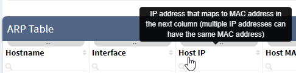
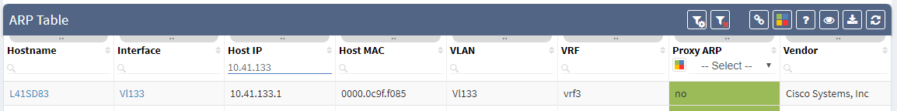
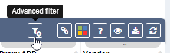
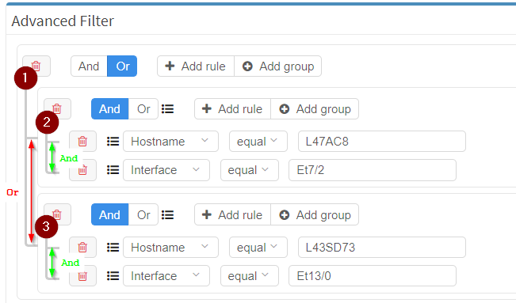
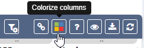
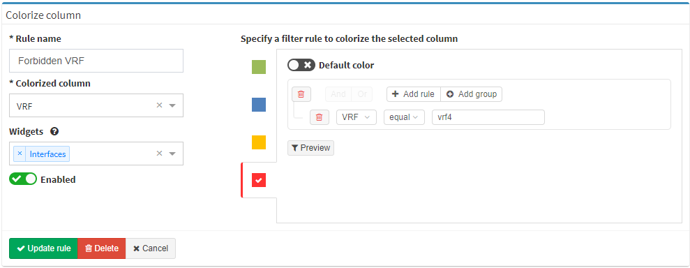
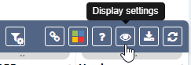
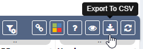
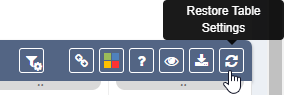

Navigate in Tables
Tables
Tables allow for analysis and correlation of network state information and parameters on the fly. Most of the tables display live snapshot data generated by graph algorithms without preexisting cache. The first load of a table usually takes longer than subsequent loads, but all tables were built to handle a large capacity and complex queries, so the outcome should be better than analyzing the output in an external application like Excel.
Working with tables
An ARP technology table is used as an example below to demonstrate the functionality of tables.
Table description
You can get a short description of the current table via question mark button.

Contextual help
Contextual help is displayed when a mouse cursor hovers over a table icon or table header text.

Searching for data / Filtering
Type in what you are looking for in most columns. The example below shows a
search for all devices with an IP address starting "10.41.133" throughout all
of the ARP tables in our infrastructure. Use  to clear the search results.
to clear the search results.

Advanced Filtering

If you need a more precise filter use Advanced Filter.
Filters are defined by groups and rules. Each group can contain on or more rules or another group. There is always one root group which cannot be deleted (number 1). Select the logical operator for each group. The example below shows logical Or for the first group and logical And for groups two and three.
What does example below do? It shows all devices with hostname L47AC8
AND interface Et7/2 as well as devices with hostname L43SD73 AND
interface Et13/0. In other words: "Show me all devices with hostname L47AC8 which have
interface Et7/2, plus all devices with hostname L43SD73 with interface
Et13/0.

Share table view

The table view can be shared with other users.
Colorize column

The table column can be colored based on predefined rules. Existing (as well as default rules) are visible above table as Reports and can be edited or removed.
To create a new rule, you need to specify Rule name, select the column to add the color to -- Colorized column and also, optionally, dashboard Widgets (check Dashboard documentation for more details). Specify a filter rule to colorize the selected column:
- Choose the color to apply rules to.
- Add rules based on the same logic as described in advanced filtering section above.
- A color can be designated as a Default color which means that any other color becomes the default color if there is no match to any other rule.
- Click Update rule
In the example below, all items in the VRF column which are named
vrf4 will be colored red. A summary number of items which matches
this rule will also be displayed on Dashboard in
the Interfaces widget.

Display setting

Select what columns are displayed by choosing in Column Visibility.
Enable Sticky first column to fix the first column in case of horizontal scrolling.
Enable Sticky table header to fix the table header in case of vertical scrolling.
Tables' rows and text can be adjusted to small, medium or large sizes with Rows height adjust .
Export to CSV

The current table view can be exported to CSV. This is useful for additional data processing in an external application.
Restore table setting

Table filters and other settings can be restored using the Restore Table Settings button. Colorization rules are not removed!